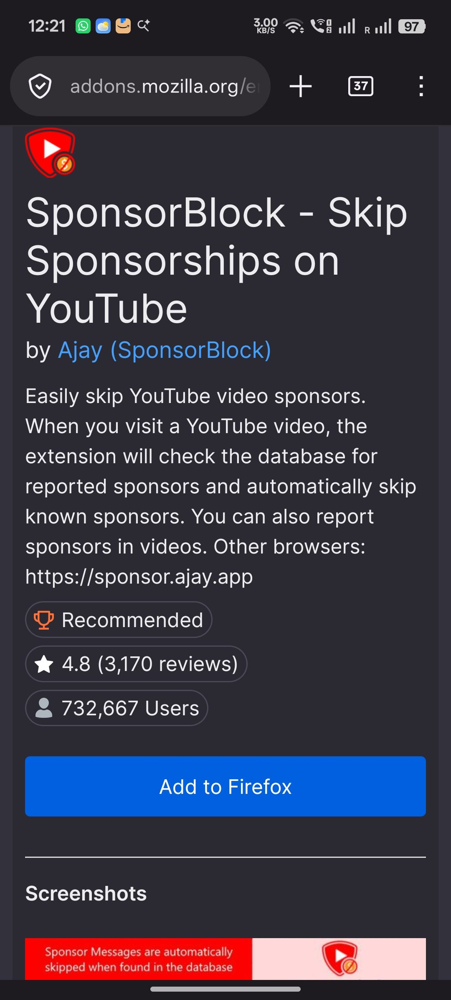
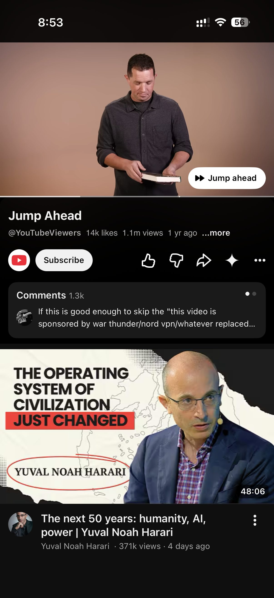
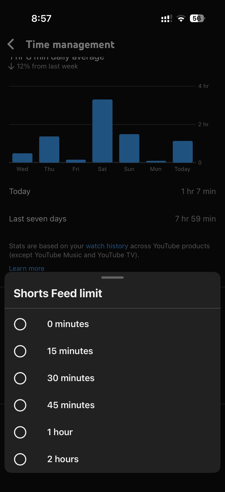

The demand you can't see
A product-strategy analysis of how YouTube turns power-user workarounds into roadmap decisions.

The trouble people go to
A product can only measure what it lets you do. Every dashboard, every funnel, every retention curve is a record of behaviour the product permitted. The wants it blocks leave no trace. A feature you can't reach is a click that never happens, and a click that never happens shows up nowhere in the data.
So the clearest signal of what to build next is often the one thing analytics can't show: the trouble people go to, on their own, to get around the product. When someone sideloads a modified app, installs a browser extension, or runs a script to bend YouTube to their will, they aren't just breaking the rules. They're paying, in effort and sometimes in real security risk, to do a thing the product decided they couldn't. That price is the signal. Nobody works that hard to solve a problem they don't have.
YouTube sits on the richest version of this signal anywhere. Its power users have spent a decade building the features it wouldn't. Read those workarounds as a list and you get an unusually honest picture of the product's own gaps.
The workarounds are a list of everything the product won't let you do, written by the people who wanted it most.
A note on method
This is an outside-in analysis. It's built on YouTube's public feature history and Help pages, on press coverage through 2026, on the power-user tools anyone can find in an afternoon, and on my own use of the product. The argument runs entirely on moves YouTube has already made in public.
The people who mod their apps are a sliver of the user base, and a self-selected one: more technical, more demanding, more willing to fight the product than the average viewer who takes it as it comes. That makes their behaviour a skewed sample. It's directional evidence: a signal of where friction lives, and never a vote on what to build.
The three sides YouTube has to keep happy
Before any of this makes sense, you have to see who YouTube actually serves. It looks like a product for viewers. It's really a marketplace balancing three groups whose interests don't line up.
Viewers want convenience: less friction, more control, fewer interruptions. Creators want reach and income: an audience, and a way to get paid for it. Advertisers want return: attention they can buy, next to content they're safe beside. YouTube only works while all three stay. Push too hard for one and the others walk. Creators leave for a platform that pays better, advertisers for cheaper attention elsewhere, and without either the viewer's free lunch ends.
Now the catch. The people building workarounds optimise for exactly one of those three sides, the viewer, with no stake in the other two. A sponsor-skipping tool is a pure gift to viewers and a straight tax on creators. That asymmetry is why a “win” for power users is so often a loss for the platform, and why YouTube can't just build what they ask for. It has to ask a harder question first.
What decides which workarounds get built
YouTube runs every one of these signals through the same rough filter, and you can reconstruct it from its choices.
First question: is the want safe for the business? If a workaround makes viewers happier without costing creators or advertisers anything, it's easy. YouTube either builds it in or, more often, puts it behind a paid tier and charges for it. Convenience it can sell is convenience it's glad to provide.
Second question, if the want is not safe: can it be redesigned into something that is? Sometimes the desire underneath is legitimate but the hack's method is poison. Then the move is to solve the desire a different way, one that leaves the other two sides intact.
And if it can't be redesigned safely, if the want can only be delivered by hurting creators or advertisers, YouTube blocks it, and keeps blocking it, no matter how loudly the workaround proves the demand.
Adopt and charge. Redesign. Or refuse. Every example below is one of those three.
| What power users hack | The real want underneath | YouTube's move |
|---|---|---|
| Sponsor-segment skippers | Reach the content without the filler | Redesign: Most Replayed graph + Premium “Jump ahead” |
| Background-play workarounds | Listen with the screen off | Adopt & charge: Premium feature; free loopholes closed |
| Shorts / feed removers | Watch on purpose, not by pull | Refuse, then concede halfway: a dismissible limit |
| Dislike-count restorers | An honest quality signal before watching | Refuse: protects creators from pile-ons |
The moves that prove the reading
Watch YouTube's real decisions through 2026 and the filter is unmistakable. Four moves, one per branch.
Sponsor-skipping: redesign
For years a crowd-sourced browser extension has let viewers auto-jump the paid promos inside videos, using timestamps other users submit. The want is obvious: get to the content, skip the ad-read. But adopting it directly would strip creators of the sponsorship money many of them live on. So YouTube didn't. It read the desire underneath, that people want to reach the good part, and built something else to serve it: a “Most Replayed” graph on the seekbar showing where viewers keep returning, and, for Premium subscribers, a machine-learning “Jump ahead” that skips to the next moment worth watching. The pacing problem gets solved. The creator's ad-read stays in the video. The desire honoured, the hack refused.

Background play: adopt and charge
Listening with the screen off. Workarounds have existed for years, from third-party browsers to patched apps, proof enough that the demand is real and intense. Here the want is safe for the business, so YouTube charges for it. Background play is a Premium feature, and in January 2026 Google confirmed it had deliberately closed the free browser loopholes that let people get it without paying, telling the press the feature is meant to stay exclusive to Premium. A month later it extended background play down to the cheaper Premium Lite tier. When a proven want doesn't threaten creators or advertisers, the workaround becomes a price.
One precision, because it's easy to get wrong: background play and the faster playback speeds are Premium, but the swipe gestures power users also asked for, double-tap to seek and swipe for volume, shipped free, because they cost the business nothing. Same filter, opposite answer, and the difference is entirely the money.
Turning Shorts off: refuse, then concede halfway
For a long time there was no real way to do it, and the workarounds, extensions and scripts that strip Shorts out of the interface, signalled a clear and steady demand from people who wanted YouTube as a search-and-watch tool instead of an endless feed. YouTube resisted. Shorts is its defence against TikTok; by its own CEO's 2026 numbers it now draws over two hundred billion views a day, up from seventy billion two years earlier. A clean off-switch erodes the exact surface keeping younger viewers from leaving. A real want, unsafe to grant.
Then in 2026 it changed, halfway. YouTube shipped a “Shorts feed limit” you can set to zero minutes, which silences the feed and, by early reports, pulls Shorts off the Home screen too.

Read the fine print and the filter is still running. For supervised teen accounts, set through Family Link, the limit locks, and YouTube called it an industry-first. For everyone else it's dismissible: hit your zero-minute limit and a reminder appears, which you can wave away and keep scrolling. YouTube gave viewers the control they'd been hacking for, and kept the moat, by making the general-user version a nudge instead of a wall. A concession measured to the millimetre.
Restoring dislikes: refuse
Public dislike counts were removed to shield smaller creators from coordinated “dislike attacks.” An extension promptly appeared to estimate and restore them, and it's popular, which tells YouTube exactly how many people miss the signal. YouTube has not brought the counts back. The demand is legible; the answer is still no, because granting it would reopen the harassment that hurts the creator side. Proof, in a single move, that reading a signal is not the same as obeying it.
The tension underneath all of it
The objection: you're building a theory of product strategy on the behaviour of a rounding error, the tiny technical minority who sideload apps. Most viewers will never install a thing. Why should their workarounds set any agenda?
Because effort is information. The average viewer tolerates friction in silence; you never learn what they'd fix, because they never do anything about it. The person who takes on real cost, in time and risk and a patched app, to solve a problem is telling you loudly that the problem is worth solving, in a way passive users never will. High-effort minorities are lead indicators. The mainstream frustration is usually the same one; it's just quiet.
But here is the distinction the method note promised. The same population that reveals real problems also over-indexes on the wants that would burn the platform down. The heaviest power users are precisely the ones who want to strip sponsors, block ads, kill Shorts, restore dislikes: the wants most likely to gut a creator's income or an advertiser's reach. Read their workarounds as a to-do list and you'd dismantle the two sides of the market that pay for the free one.
So the signal has to be split in two. The workaround tells you what's broken. It does not tell you what to build.
Power users show you the problem. They don't get to choose the solution.
Every good move above obeys that split. Sponsor-skipping revealed a pacing problem; YouTube fixed the pacing, not the skipping. Shorts-blockers revealed a control problem; YouTube gave control, dismissibly. The hack is the diagnosis. The redesign is the job.
What this predicts
If the reading is right, it should tell us what YouTube does next, and give you a way to prove me wrong.
Here's the call. YouTube will not ship a true off-switch for Shorts to its general users. It will keep refining the soft version, with finer limits, better Home-feed suppression, maybe a setting that lasts longer. But it will keep that version dismissible, a nudge you can always override, for any account that isn't a supervised child's. The hard, persistent, account-level “never show me Shorts again” will stay locked to Family Link, where the person setting it isn't the person watching. The reason is the same two hundred billion views a day: a real off-switch for adults doesn't manage the TikTok threat, it cedes ground to it.
If YouTube ships a persistent, non-dismissible “turn Shorts off for good” toggle for ordinary adult accounts, one the viewer sets for themselves and the platform doesn't quietly reset, then the moat mattered less than I think and this whole reading of the filter is wrong.
Until then, the workarounds keep coming, and they keep doing the same unpaid work: showing YouTube, for free, exactly what its users wish it were: one problem the product won't let them solve, at a time.